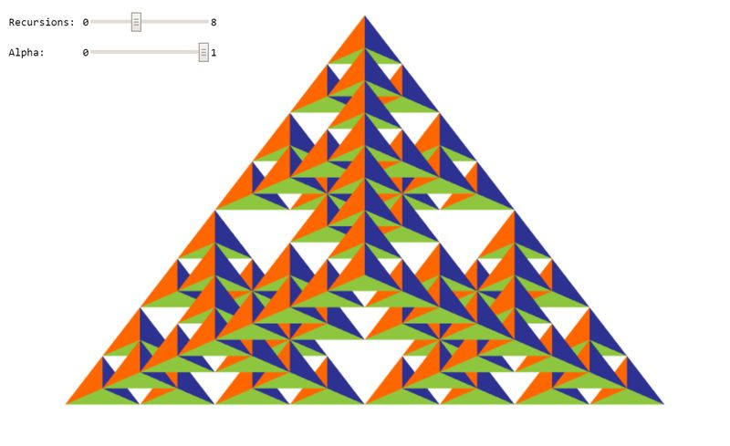

New Jersey Institute of Technology
Interactive Computer Graphics CS 438 / CS 657
Assignment 1
Author: Garcia, Miguel
Date: 2/11/2026
Due: 2/25/2026
Go to Assignment Home | Task 1 | Task 2 | Task 3 | Task 4
Task 3 (6 points)
Search for TODO_A1 in the JS file to find all tasks in the code!
Drawing of 3D objects:
3a: Create a 3d Sierpinski Gasket geometry composed of regular tetrahedra by calling this function recursively. Use the argument 'recursions' to specify the depth of the recursion. Use the function mix(a, b, lambda) for both the vertex and color interpolation with lambda = 0.5 (3 points).
3b: Extend the vertex stage to handle 3d positions as input attributes (1 point).
3c: Adjust the vertex buffer layout for positions and colors accordingly for usage of 3d points. In particular, you need to take care of the size, stride, and offset values of the buffer (1 point).
3d: Adjust the draw-call parameters in order to be able to deal with the new vertex buffer layout which now contains 3d floating-point positions (1 point).
Your result should look like in the image below, however, you can choose your own colors for the faces of the tetrahedra.

Your WebGPU Canvas
WebGPU: initializing Task 3 preview...
Documentation
Please write a short report here. It should list what you have implemented, as well as a brief discussion and your conclusions. Also add as many comments in your code as possible---it will help us in judging your work.
From my understanding
- vec3(x, y, z) — Each vertex in the Sierpinski gasket is a 3D point, so every position needs three coordinates.
- mix(a, b, 0.5) — Computes the midpoint between two vectors using linear interpolation like before this time a value below 0.5 would pull midpoints toward the first vertex making everything uneual, and a value above 0.5 would pull them toward the second vertex, shifting the whole fractal asymmetrically.
- flattenArrays(points, colors) — Interleaves the two arrays into one flat buffer: [x, y, z, r, g, b, x, y, z, r, g, b, ...]. Each vertex is a vec3 position + vec3 color, so every vertex occupies 6 floats.
3a — Sierpinski Gasket recursion
The divideTetra(a, b, c, d, count) function builds the fractal by subdivision. At count = 0 it draws the leaf tetrahedron directly via tetra(). Otherwise it computes the 6 edge midpoints with mix(v1, v2, 0.5) and then calls itself recursively on the four corner sub-tetrahedra: corner a (a, midAB, midAC, midAD), corner b (midAB, b, midBC, midBD), corner c (midAC, midBC, c, midCD), and corner d (midAD, midBD, midCD, d). We dont use the octahedron formed by all 6 midpoints to get this style.
3b — 3D vertex stage in the WGSL shader
The vertex shader input was changed from vec2f to vec3f to accept the z coordinate. WebGPU clip-space z must be in [0, 1] which we use as near = 0, far = 1, but the model vertices have z in roughly [-1, 1], so z is remapped with (a_pos.z + 1.0) * 0.5 before being written to out.position. x and y are already in NDC [-1, 1] and pass through unchanged.
3c — Vertex buffer layout for 3D
Each vertex is laid out as [x, y, z, r, g, b] — 6 floats, 24 bytes total. The arrayStride is 24 bytes, the position attribute is float32x3 at offset 0, and the color attribute is float32x3 at offset 12 bytes (right after the 3 position floats).
3d — Draw call vertex count
The vertex count was changed from `vertices.length / 5` to 6 because each vertex now has 6 floats instead of 5. For example, if each vertex stores 3 floats for position (x, y, z) and 3 floats for color (r, g, b), that’s 6 total numbers per vertex. So when the GPU just sees one long list of numbers it wont automatically know where one vertex ends and the next stars. So we divide the total number of floats by how many floats make up one vertex which is called the stride to figure out how many actual vertices we have. If we divide by the wrong number, the GPU will start reading vertices at the wrong spots in memory. That means part of one vertex’s color could be treated as the next vertex’s position, and everything gets shifted over incorrectly. When that happens, the shape can look stretched or borken in genral The pass.draw(vertexCount) call doesn’t change because we’re still using a triangle list. In a triangle list, every 3 vertices in a row make one triangle. So it reads them like t1:0,1,2, t2:..and so on. Since the tetrahedron data is already written so that every group of three vertices forms one triangle, we don’t need an index buffer. The only thing that needed fixing was making sure the vertex count matches the new stride so the GPU reads the data correctly.
Assignment Validation & Authorship
To ensure academic integrity and verify original authorship and mastery of the material, exams will include specific Validation Question. Programming assignments are assessed on both code functionality and your understanding of the implementation. To verify authorship, exams will include specific "Validation Questions" related to the logic and structure of your submitted assignments.
Penalty Policy: An incorrect answer to a validation question demonstrates a gap in understanding the submitted work. For each validation question answered incorrectly, 10% of the total points for the corresponding assignment will be retroactively deducted from that assignment's grade.
This deduction applies regardless of the original score received on the assignment. It is your responsibility to ensure you can explain and reproduce the logic of any code you submit.
Honor Code
A set of ethical principles governing this course:
- It is okay to share information and knowledge with your colleagues, but
- It is not okay to share the code,
- It is not okay to post or give out your code to others (also in the future!),
- It is not okay to use code from others (also from the past) for this assignment!
Any noticed disregard of these principles will be sanctioned as per the Academic Integrity Policy of NJIT (see below).
Academic Integrity / Institutional Policies
Academic Integrity is the cornerstone of higher education and is central to the ideals of this course and the university. Cheating is strictly prohibited and devalues the degree that you are working on. As a member of the NJIT community, it is your responsibility to protect your educational investment by knowing and following the academic code of integrity policy that is found at: http://www5.njit.edu/policies/sites/policies/files/academic-integrity-code.pdf".
Please note that it is the professional obligation and responsibility of the instructor to report any academic misconduct to the Dean of Students Office. Any student found in violation of the code by cheating, plagiarizing or using any online software inappropriately will result in disciplinary action. This may include a failing grade of F, and/or suspension or dismissal from the university. If you have any questions about the code of Academic Integrity, please contact the Dean of Students Office at dos@njit.edu.
Good Luck!
Instructor: Dr. Przemyslaw Musialski, Associate Professor
Email: przemyslaw.musialski@njit.edu
Copyright (c) 2019-2026 Przemyslaw Musialski